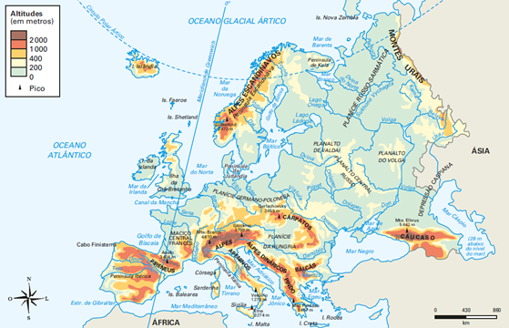

Os conflitos étnicos na Europa têm uma longa história, que remonta à Antiguidade. No entanto, os conflitos étnicos modernos na Europa começaram a surgir no século XIX, com o colapso dos impérios europeus e a formação de novos estados-nação. Esses novos estados-nação foram criados com base em fronteiras étnicas, mas muitas vezes essas fronteiras não correspondiam aos territórios habitados pelos diferentes grupos étnicos. Isso criou um clima de tensão e conflito entre os diferentes grupos étnicos, que frequentemente resultou em guerras e genocídios. Algumas das principais causas dos conflitos étnicos na Europa são: Fronteiras étnicas arbitrárias, Movimentos nacionalistas e História de conflitos.
O conflito étnico na Europa diminuiu ao longo do tempo devido a uma convergência de fatores multifacetados e complexos. A integração das minorias étnicas nas sociedades de acolhimento tem sido um processo gradual, mas crucial, que promove a coexistência pacífica e a compreensão intercultural. Esse fenômeno não apenas permitiu o fortalecimento do tecido social, mas também enriqueceu as comunidades com diversas perspectivas e experiências. Além disso, o fortalecimento das instituições democráticas em muitos países europeus foi um marco fundamental. Essas instituições garantem a igualdade de direitos e oportunidades para todos os cidadãos, independentemente de sua origem étnica, e proporcionam mecanismos legais para resolver disputas de forma justa e transparente. Os esforços diplomáticos têm desempenhado um papel vital na redução das tensões étnicas, à medida que líderes europeus se empenham em resolver disputas históricas e promover a cooperação regional. A diplomacia preventiva e a mediação em conflitos têm sido especialmente eficazes na prevenção de escaladas violentas e na promoção do diálogo construtivo entre grupos étnicos. O desenvolvimento econômico também desempenhou um papel significativo. O crescimento econômico e a criação de oportunidades de emprego para diferentes grupos étnicos reduziram as disparidades socioeconômicas e as tensões sociais associadas. Isso foi facilitado, em parte, pela integração econômica mais ampla na Europa e pela promoção do comércio e dos investimentos transfronteiriços. Além disso, organizações internacionais como a União Europeia e a OTAN têm desempenhado um papel crucial na promoção da paz e da estabilidade na região. Por meio de programas de cooperação, apoio ao desenvolvimento e facilitação do diálogo político, essas organizações têm contribuído para a construção de relações pacíficas entre os Estados membros e além.
Os conflitos étnicos muitas vezes surgem de tensões entre grupos que se identificam com diferentes etnias, culturas ou identidades religiosas. Essas tensões podem ser exacerbadas por uma série de fatores, como a competição por recursos escassos, disputas territoriais, discriminação, injustiça social e políticas governamentais discriminatórias. Além disso, as rivalidades históricas e traumas coletivos também desempenham um papel significativo na perpetuação desses conflitos. Por exemplo, disputas territoriais que remontam a séculos atrás podem continuar a alimentar hostilidades entre grupos étnicos até os dias de hoje. A resolução eficaz desses conflitos muitas vezes requer uma abordagem holística e de longo prazo. Isso pode envolver medidas como o fortalecimento das instituições democráticas para garantir a igualdade de direitos e oportunidades para todos os grupos étnicos, o estabelecimento de processos de reconciliação e justiça para lidar com traumas históricos, e a promoção do diálogo intercultural e da compreensão mútua. Além disso, abordar as causas subjacentes dos conflitos étnicos, como a pobreza, a falta de acesso a recursos básicos e a exclusão social, é fundamental para prevenir sua recorrência no futuro. Essa abordagem requer uma cooperação eficaz entre governos, organizações internacionais, sociedade civil e comunidades locais.
